Sistem Komputer Menyelam ke Dalam Mesin Digital
💡 Panduan Singkat Menggunakan Media Pembelajaran Interaktif (MPI)
🧭 Tombol Navigasi
Kembali ke halaman sampul utama (cover) kapan saja.
Membuka menu utama untuk memilih topik materi atau aktivitas.
Berpindah ke halaman atau materi pembelajaran sebelumnya.
Melanjutkan ke halaman materi atau tantangan berikutnya.
🎯 Alur Pembelajaran
Pahami konsep Segitiga Emas (Hardware-Software-Brainware), bedah 4 pilar hardware, uji tantangan menjodohkan, tonton video siklus CPU, hingga fungsi Sistem Operasi.
Rakit komponen PC di lab virtual, pelajari kecocokan soket/slot, dan amati alur booting serta kode suara beep BIOS.
Uji pemahamanmu lewat berbagai tipe soal interaktif (PG, Benar/Salah, Menjodohkan, dan Alur Booting) beserta umpan balik skor otomatis.
Baca kembali intisari konsep sistem komputasi, tuliskan refleksi belajarmu, dan selesaikan seluruh pembelajaran!
🎯 Setelah mengikuti pembelajaran interaktif ini, peserta didik diharapkan mampu:
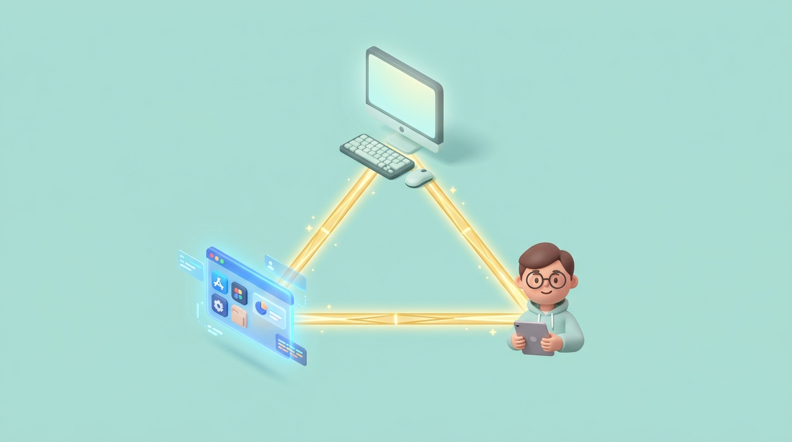
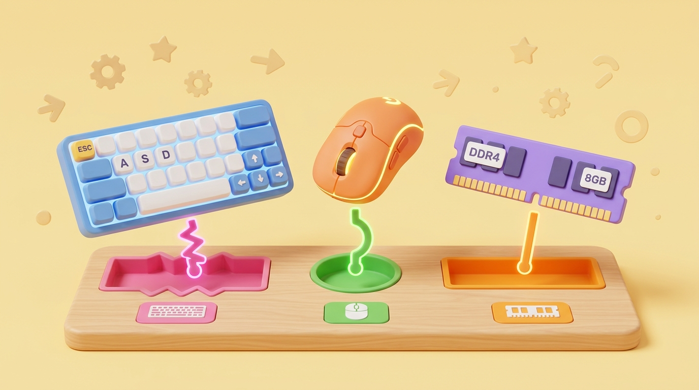
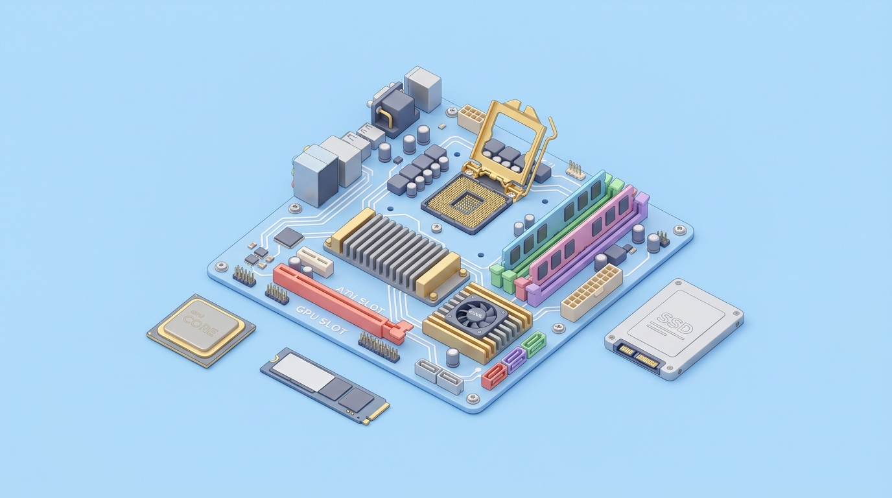
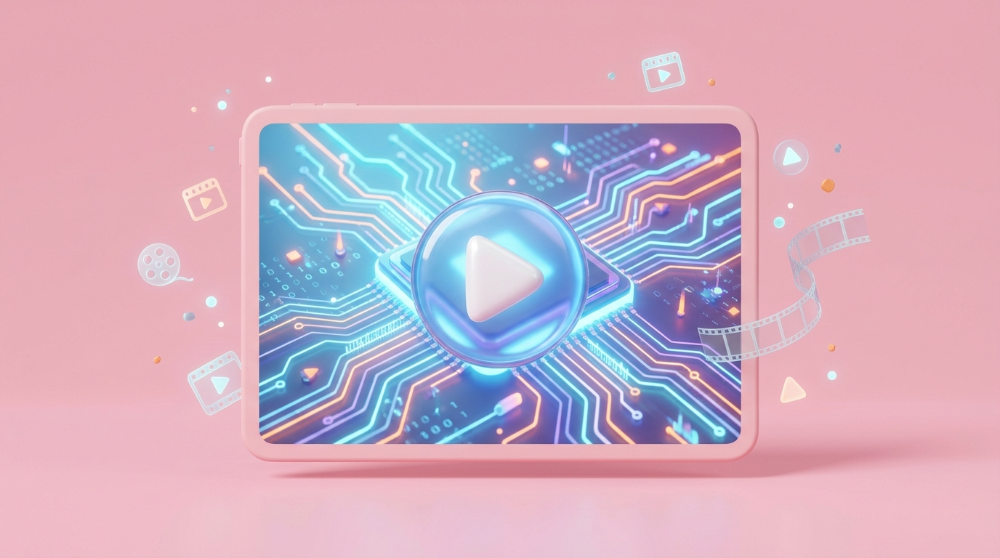
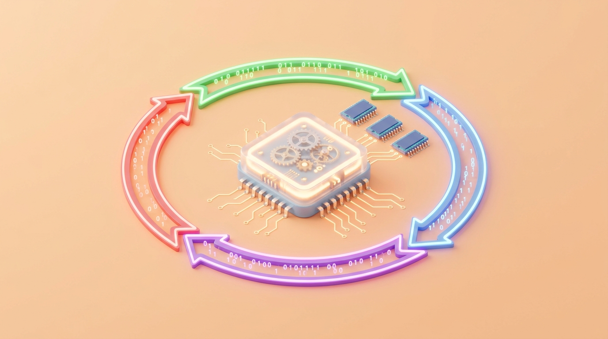
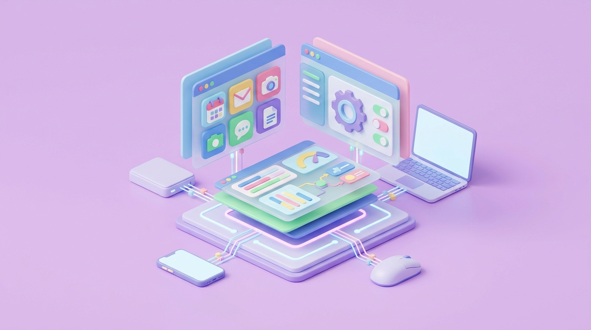
🖥️ 1. Apa Itu Sistem Komputer?
Sistem Komputer adalah kesatuan utuh yang terdiri dari Hardware, Software, dan Brainware yang bekerja sama mengolah data menjadi informasi.
📱 HP-mu adalah komputer! Yuk buktikan →
🔺 2. Segitiga Emas Sistem Komputer
Komputer hanya berfungsi sempurna jika ketiga unsur ini ada secara bersamaan:
📱 3. Analogi: Tubuh Manusia = Komputer!
💡 Bandingkan komputer dengan dirimu:
- Hardware = Tubuhmu (tangan, mata, otak fisik, jantung)
- Software = Pikiranmu (cara berpikir, pengetahuan, bahasa)
- Brainware = Tujuan hidupmu (ingin jadi apa, mau ngapain)
➡️ Tubuh tanpa pikiran = robot mati. Pikiran tanpa tujuan = sia-sia. Ketiganya harus ada!
🌍 4. Berbagai Contoh Sistem Komputer
| Perangkat | Hardware | Software |
|---|---|---|
| 📱 HP | Layar, chip, kamera | Android, WhatsApp |
| 💻 Laptop | CPU, RAM, keyboard | Windows 11, Word |
| 🏧 ATM | Layar, tombol, printer | Sistem perbankan |
| 📺 Smart TV | Panel OLED, remote | Android TV, YouTube |
💬 Ingat: Tanpa salah satu dari tiga unsur ini, sistem komputer tidak akan berfungsi sempurna. Kita akan mempelajari masing-masing lebih dalam di materi berikutnya!
🎯 Klik istilah komponen di sebelah kiri, lalu klik fungsi yang tepat di sebelah kanan untuk menghubungkan garis!
📦 1. Empat Pilar Perangkat Keras
Semua perangkat keras komputer dikelompokkan ke dalam 4 fungsi utama:
Menerima data & perintah pengguna (Keyboard, Mouse, Layar Sentuh, Mikrofon, Kamera).
Otak pemroses instruksi berkecepatan miliaran siklus/detik (GHz), dilindungi pendingin heatsink.
RAM (kerja cepat & sementara) serta SSD/HDD (penyimpan file data permanen).
Menyajikan hasil pemrosesan informasi ke pengguna (Monitor, Speaker, Printer, Proyektor).
💡 Analogi HP: Layar Sentuh (Input) ➔ Chipset (CPU) ➔ RAM & Memori ➔ Layar AMOLED & Speaker (Output).
🔌 2. Motherboard: Tulang Punggung
Papan sirkuit utama tempat semua komponen terpasang dan saling bertukar data:
Dudukan presisi prosesor dengan sistem pengunci khusus dan kipas pendingin (heatsink-fan).
Jalur transfer data memori cepat dengan lekukan pengaman (notch) agar tidak salah pasang.
Jalur ekspansi kilat untuk SSD penyimpanan super cepat dan Kartu Grafis (GPU) pengolah visual game/video.
🧠 Kolaborasi CPU & GPU: CPU adalah otak utama serba bisa, sedangkan GPU adalah spesialis memproses ribuan piksel grafis game & video secara paralel.
🔍 Panduan Pengamatan Video:
CPU mengambil instruksi atau data biner dari memori RAM untuk diproses.
Control Unit (CU) menerjemahkan kode biner menjadi perintah yang dipahami prosesor.
Unit ALU mengeksekusi perhitungan matematika atau pengujian logika data.
Hasil pengolahan disimpan ke memori atau dikirim ke layar sebagai tampilan visual.
⚡ 1. Perjalanan Sebuah Huruf "A"
Saat kamu mengetik huruf "A" di keyboard, apa yang terjadi dalam seperseribu detik di dalam CPU?
CU mengambil kode instruksi "tampilkan huruf A" dari RAM ke dalam CPU melalui bus data.
CU menguraikan kode biner menjadi sinyal: "petakan titik-titik pixel membentuk huruf A di koordinat tertentu."
ALU menghitung posisi dan warna setiap piksel huruf A dalam hitungan nanodetik.
Hasil dikirim ke GPU → VRAM → Monitor. Huruf "A" muncul di layarmu! Siklus ini berulang miliaran kali per detik.
🧠 2. Tiga Komponen Inti CPU
Kalkulator internal: penjumlahan, pengurangan, dan logika biner (AND, OR, NOT).
Dirigen yang mengatur irama (Clock Speed ~3–5 GHz = 3–5 miliar siklus/detik!).
Memori ultra-cepat di dalam chip. Hierarki: Register > Cache > RAM > SSD
🛠️ 3. Diagnostik Booting: POST BIOS
Saat tombol Power ditekan, BIOS/UEFI memeriksa hardware secara berurutan:
1. CPU ➜ 2. RAM (DRAM) ➜ 3. GPU (VGA) ➜ 4. SSD (BOOT)
🔔 Kode Beep: 1 beep pendek = normal. Beep panjang berulang = RAM bermasalah!
Jika semua lolos, OS dimuat dari SSD ke RAM → komputer siap dipakai.
⚙️ 1. Empat Peran Kunci Sistem Operasi (OS)
OS adalah jembatan penghubung utama antara Hardware, Aplikasi, dan Brainware:
Membagi giliran kerja CPU agar puluhan aplikasi bisa berjalan serentak tanpa saling mengganggu.
Mengatur jatah RAM dan meminjam ruang SSD sebagai memori darurat saat RAM hampir penuh.
Menyediakan tampilan klik visual yang ramah (GUI) maupun baris teks perintah (CLI).
Penerjemah komunikasi antara OS dan perangkat keras tambahan (printer, GPU, kamera).
📱 OS Sehari-hari: Windows 11 (Laptop) · Android 14 (HP) · iOS (iPhone) · macOS (MacBook).
🔺 2. Harmoni Segitiga Emas dalam Aksi
Setiap aktivitas komputasi melibatkan ketiga unsur Segitiga Emas secara serentak:
🔬 Tips Task Manager: Tekan Ctrl+Shift+Esc di Windows untuk memantau pemakaian CPU & RAM, serta menutup paksa aplikasi yang macet.
💡 Intisari Akhir: Hardware adalah raga fisik, Software adalah akal & logika, dan Brainware adalah jiwa penentu tujuan. Ketiganya bersatu membentuk Sistem Komputer!
Permainan — Simulator Sistem Komputer
Jadilah teknisi komputer handal! Taklukkan tantangan di lab virtual:
Rakit Komputer (Pasang CPU, RAM, SSD, PSU & Uji Nyala POST),
hingga amati bagaimana Siklus Mesin CPU (Fetch, Decode, Execute, Store) memproses data secara
real-time!
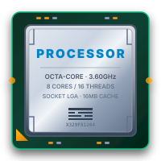


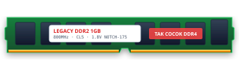
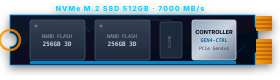
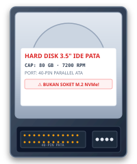
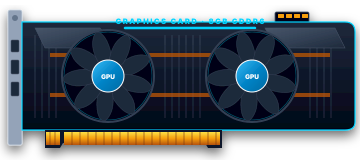
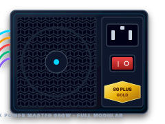
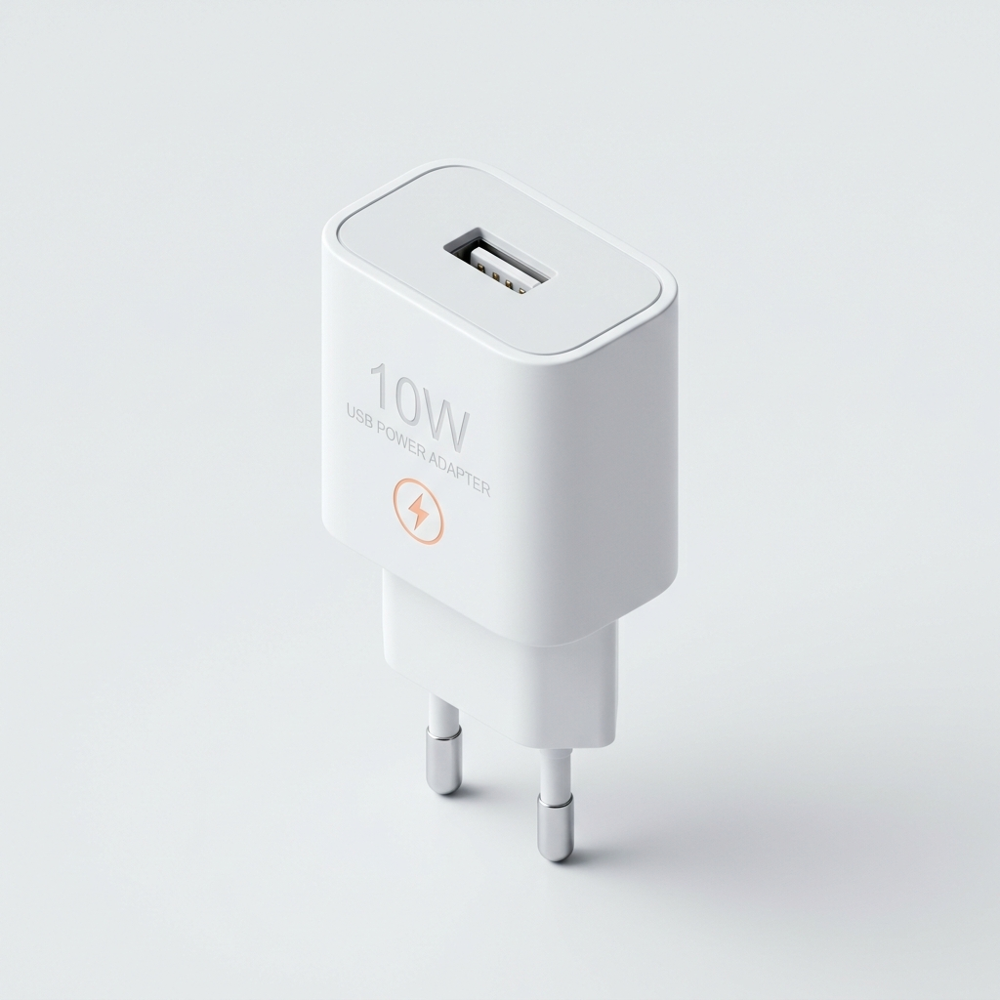
Latihan Evaluasi
Uji pemahamanmu secara menyeluruh melalui
4 jenis tantangan interaktif:
A. Pilihan Ganda (10 soal) • B. Benar/Salah (5 soal)
C. Menjodohkan (5 pasang) • D. Mengurutkan Proses Booting
Klik komponen/istilah di sebelah kiri, lalu klik fungsi yang tepat di sebelah kanan untuk menghubungkan garis. Klik kartu/tombol ✕ untuk membatalkan.
Seret kotak tahapan berikut ke urutan proses booting komputer yang benar dari awal tombol power ditekan hingga OS siap digunakan.
🔺 1. Segitiga Emas: Sinergi Sistem Komputer
Komputer hanya berfungsi jika KETIGA unsur ini bersinergi:
🖥️ 2. Empat Pilar Perangkat Keras
| Pilar | Fungsi Utama | Contoh Perangkat |
|---|---|---|
| ⌨️ Input | Memasukkan perintah & data | Keyboard, Mouse, Touchscreen |
| 🧠 Pemroses | Mengolah instruksi biner | CPU, GPU (di Motherboard) |
| 💾 Penyimpanan | Menyimpan data & file | RAM (sementara), SSD (permanen) |
| 🖥️ Output | Menyajikan hasil olahan | Monitor, Speaker, Printer |
🔄 3. Siklus Mesin CPU (Von Neumann)
⚡ 4. RAM vs SSD: Apa Bedanya?
| Karakteristik | RAM (Memori Kerja) | SSD (Penyimpanan) |
|---|---|---|
| Sifat Data | Volatile (Sementara) ⚡ | Non-Volatile (Permanen) 🔒 |
| Mati Listrik | Data terhapus bersih ❌ | Data tersimpan aman ✅ |
| Kecepatan | Sangat cepat (nanodetik) | Cepat (mikrodetik) |
⚙️ 5. Peran Kunci Sistem Operasi (OS)
- Kurikulum Merdeka — Capaian Pembelajaran Informatika SMP Fase D, Kementerian Pendidikan Dasar dan Menengah Republik Indonesia.
- Buku Siswa Informatika SMP Kelas VII & VIII — Bab Sistem Komputer (SK), Pusat Perbukuan Kemendikdasmen.
- Hennessy, J. L., & Patterson, D. A. (2017). Computer Organization and Design: The Hardware/Software Interface (5th Edition). Morgan Kaufmann.
- Stallings, W. (2016). Computer Organization and Architecture: Designing for Performance (10th Edition). Pearson Education.
- Storyboard MPI Informatika — "Sistem Komputer: Menyelam ke Dalam Mesin Digital", Tim Pengembang SMP Negeri 2 Lamongan, 2026.
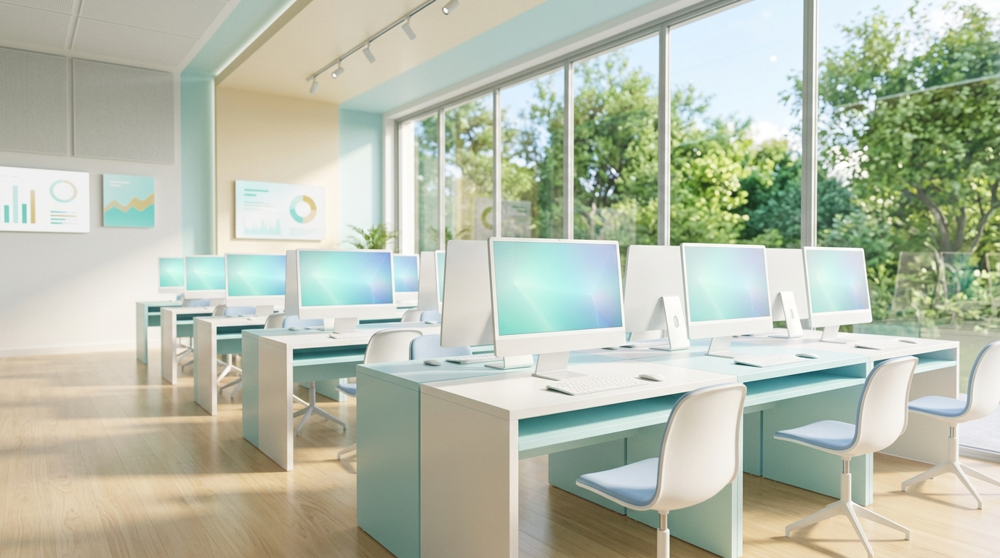
assets/bg-lab-clean.jpg
assets/thumb_materi_1.jpgassets/thumb_materi_2.jpgassets/thumb_materi_3.jpg
assets/thumb_materi_4.jpgassets/thumb_materi_5.jpg
assets/thumb_materi_6.jpg
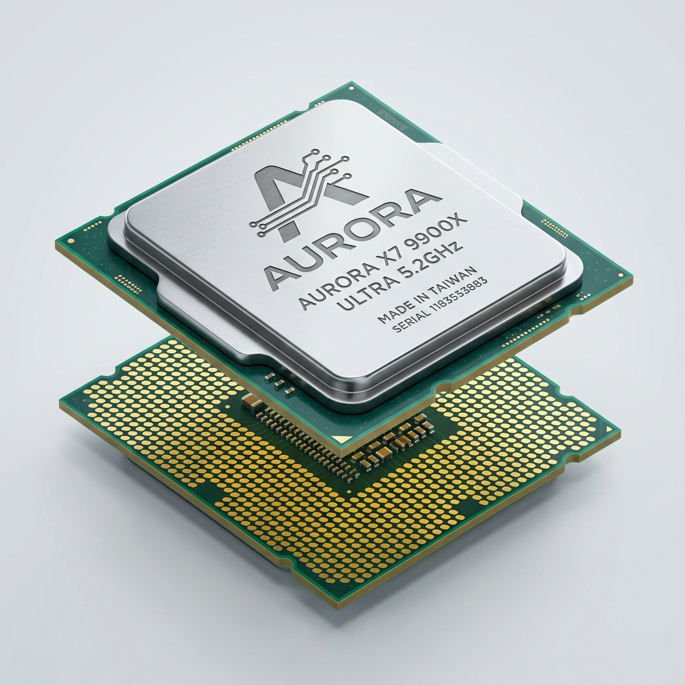
assets/comp_cpu_good.jpg
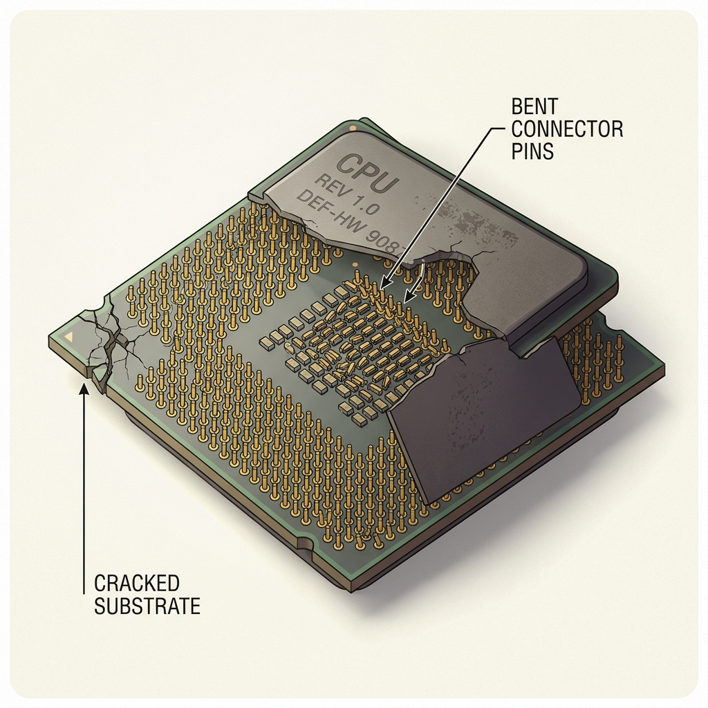
assets/comp_cpu_bad.jpg
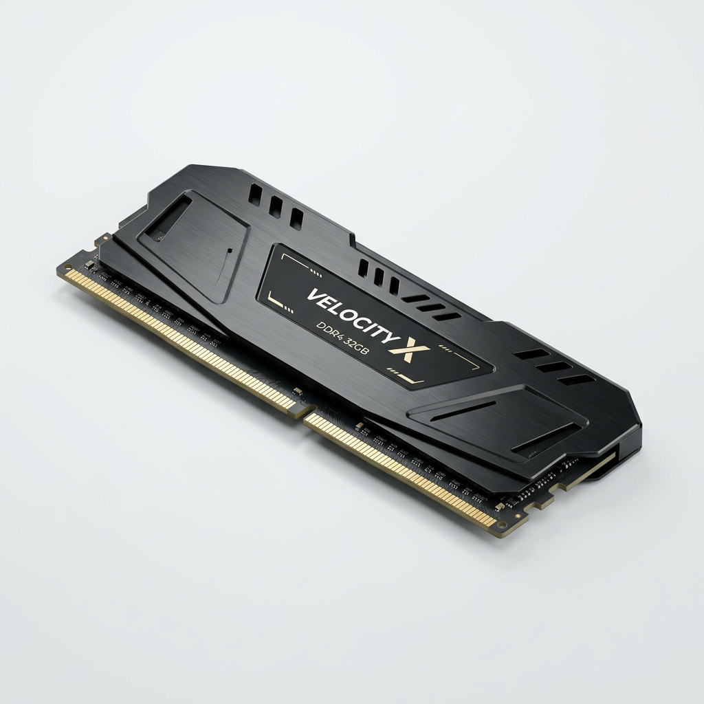
assets/comp_ram_good.jpg
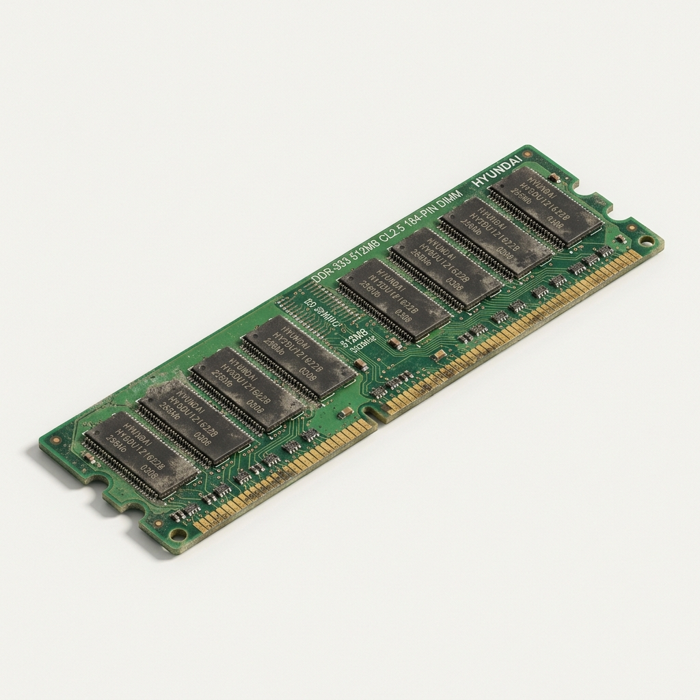
assets/comp_ram_bad.jpg
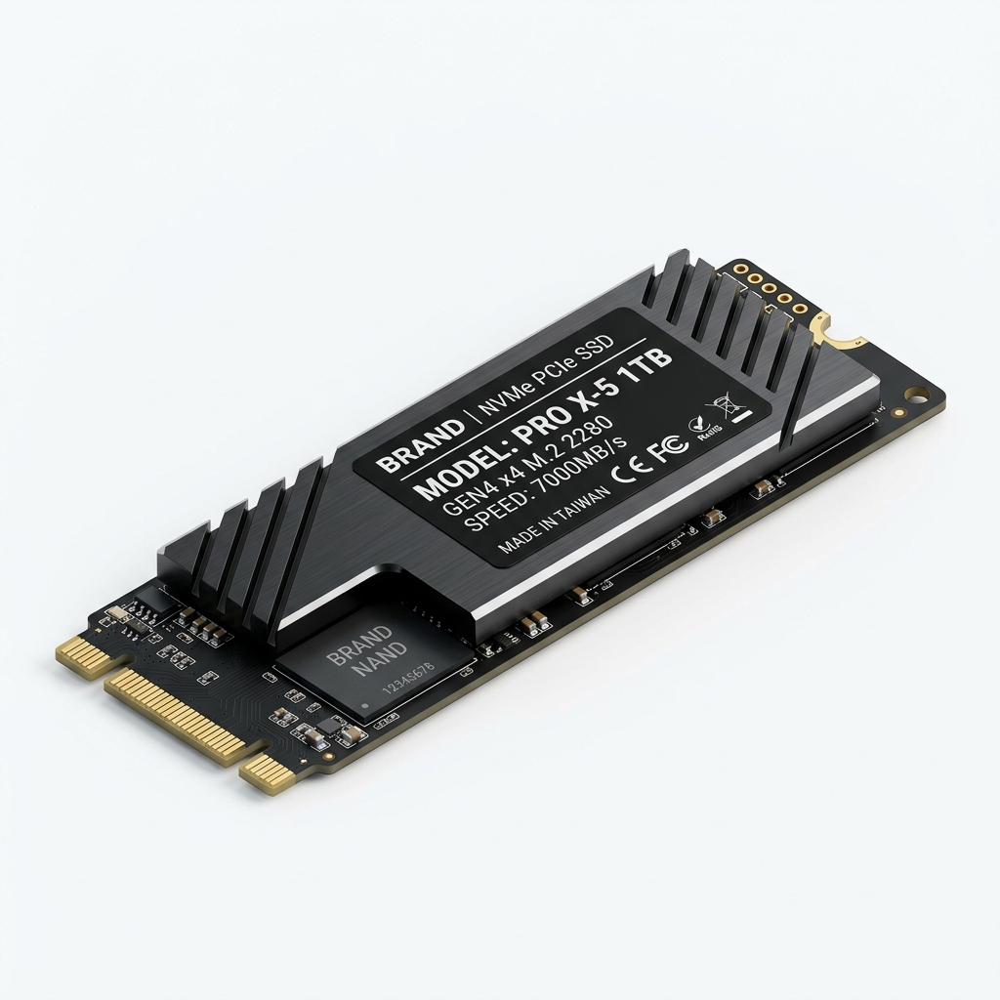
assets/comp_ssd_good.jpg
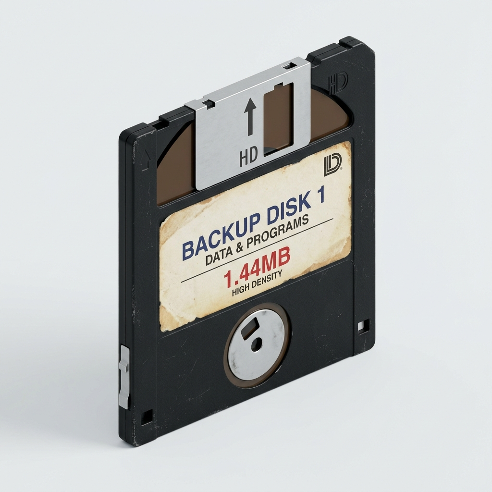
assets/comp_floppy_bad.jpg
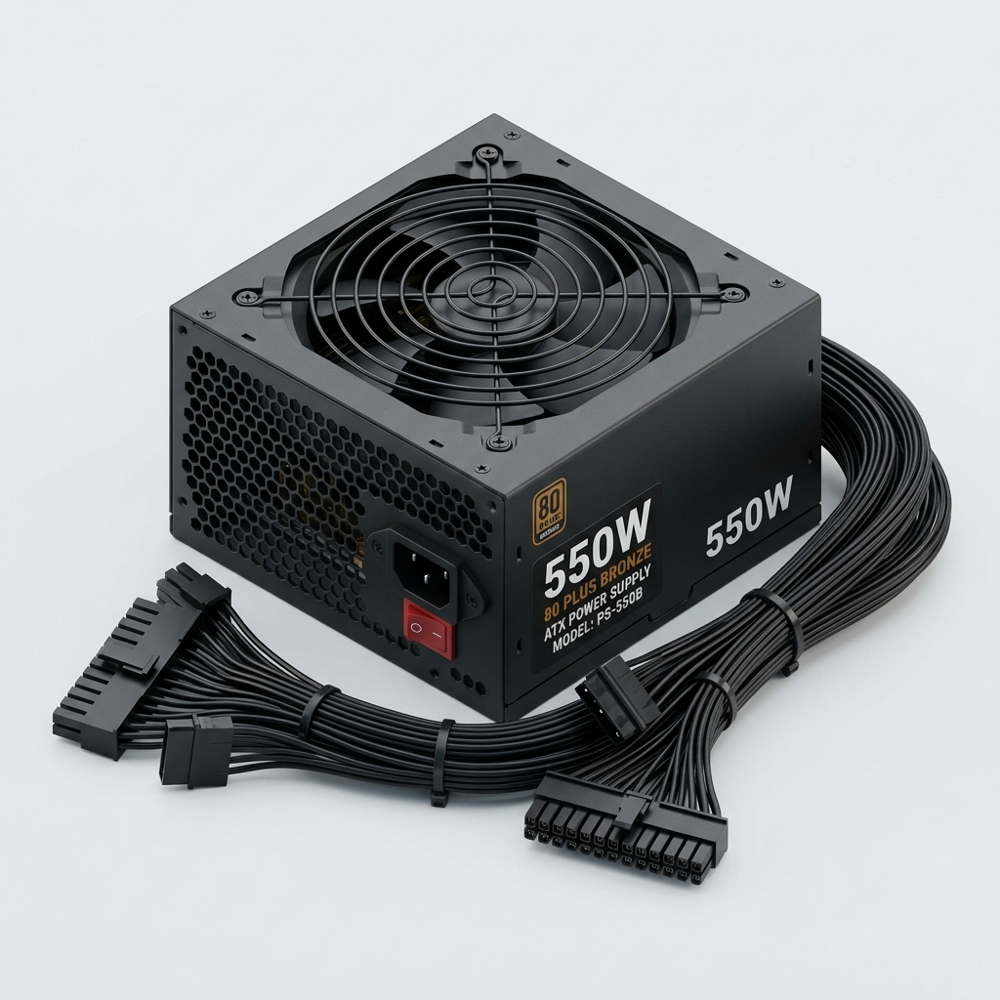
assets/comp_psu_good.jpg
assets/comp_charger_bad.jpgassets/trouble_screen_beep.jpgassets/trouble_task_manager.jpgBERKARYA UNTUK NEGERI MELALUI DIGITALISASI PEMBELAJARAN INOVATIF BERDAMPAK
— Bersama Memajukan Pendidikan Indonesia yang Bermutu dan Berkarakter —
Inovatif & Kreatif
Mendorong pembelajaran interaktif berbasis teknologi sistem komputer cerdas
Bermutu & Relevan
Menyajikan materi esensial sesuai kurikulum masa depan
Karakter Berdaya
Membentuk generasi pembelajar mandiri dan bernalar kritis


KEMENTERIAN PENDIDIKAN DASAR DAN MENENGAH
DIREKTORAT JENDERAL PENDIDIKAN ANAK USIA DINI, PENDIDIKAN DASAR, DAN PENDIDIKAN NONFORMAL DAN INFORMAL
DIREKTORAT SEKOLAH MENENGAH PERTAMA